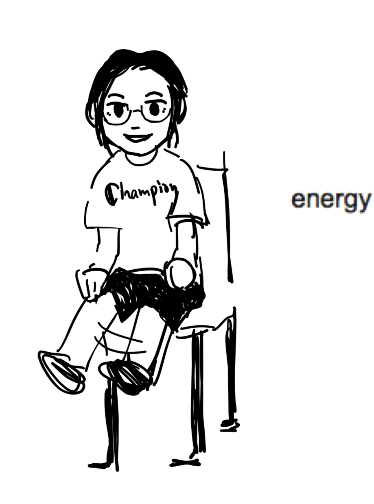

Welcome to my homepage! I am a high schooler interested in math, physics, and cs. I especially love math and want to take pure math as my major in college.
My favorite areas of math are geometry and number theory. Besides math I also like listening to classic and J-POP music and enjoy physics problem. I am the president of physics and math club in my school, teaching interesting content to make people love math and physics. Open-sourced handouts created by me (and my friends) are included in the resources page.

I started learning competitional math from a young age, even though I didn't really enjoy math at that time. However, my true love for math which is activated by my math teacher, began to arouse since grade 8. I previously planned to take domestic high school, but a few events (for example, COVID-19) changed my plan and influenced my life. Therefore, I started studying in international high school learning IB.
In the summer of 2023, I participated in the (amazing) Ross Mathematics Program, furtherly strengthening my idea of taking math as my major. (See my essay for Ross) Some of my favorite moments in Ross includes:
- Doing problem sets until it is 2am.
- Playing exploding kitten with friends in Percopo 002.
- 5K run (even though I didn't finish it, my hreat was beating so quickly)
- Late night playing Mafia with all devices died during power outage.
- Basement karaoke at 5am.
- Knocking on friend's dorm door after lecture (bro you missed class!)
By the way, my favorite formula is Euler's formula. \[ e^{i\pi}+1=0 \]
My Ambitious Dreams
I have a dream, that I can read through all the UTM and GTM series. UTMs ...
that I finished reading
- Rational Points on Elliptic Curves - John Tate and Joseph H. Silverman
that I am currently reading
- Linear Algebra Done Right - Sheldon Axler
GTMs ...
that I finished reading
- A Course in Number Theory and Cryptography - Neal Koblitz
Modern Graph Theory
I took an interesting GTM Book Test showing that if I were a Springer-Verlag Graduate Text in Mathematics, I would be ...

|
Bela Bollobas's Modern Graph Theory . I am an in-depth account of graph theory, written with the student in mind; I reflect the current state of the subject and emphasize connections with other branches of pure mathematics. Recognizing that graph theory is one of several courses competing for the attention of a student, I contain extensive descriptive passages designed to convey the flavor of the subject and to arouse interest. |
Once you eliminate the impossible, whatever remains - no matter how improbable - must be the truth -- Sherlock Holmes